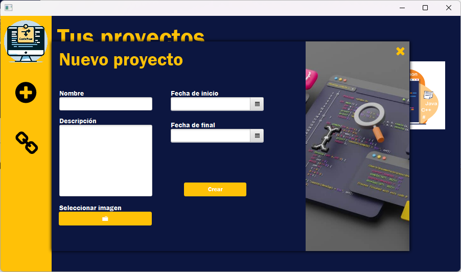

Para crear un proyecto, pulsamos el icono "+" y aparacera una ventana de ayuda para la creacion de un nuevo proyecto.
El proyecto necesita todos los datos para poder crearse correctamente, a excepcion de la imagen. Se pondra una por defecto en caso de no poner ninguna manualmente.
Para editar o eliminar un proyecto debemos entrar en el mismo. Aqui tambien podemos ver las tareas del proyecto.

Para eliminar un proyecto pulsamos sobre el icono "x" y confirmamos. Para editarlo, pulsamos sobre el icono del lapiz y nos mostrara el mismo panel de creacion pero con los datos del proyecto, para poder modificarlos.
Para volver pulsamos sobre la flecha y estaremos de vuelta en la pantalla principal.